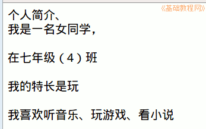

2011-2012 第二学期七年级文字处理和网页教学设计
作者：TeliuTe 来源：基础教程网
二十一、学会自我简介 返回目录 下一课
（一）教学设计
1、学习目标：学会设置网页属性
2、注意事项：utf8才能显示中文
3、教学过程：
1）教师准备学案和板书；
2）学生整队进入，开机抄黑板上笔记；
3）教师讲解板书演示操作；
4）学生打指法、日志、完成操作；
5）教师打勾记录学生指法成绩，检查日志和操作；
注：学生抄完笔记就开始打指法、日志，老师讲完后再继续完成；
（二）板书设计(学生笔记)
第21课 学会自我简介
1、主文件夹、7-4、kompozer、双击运行
2、点“格式 、页面标题、、、中文/中国、到右、Utf-8
3、保存、web、about、扩展名留着
4、输入简介：姓名、性别、生日、爱好、特长
5、点保存、点浏览、点火狐
操作图示：

（三）课后记 2012-5-15
上周一节课没上，感觉好久没上课了
这要是一周一节的话，上完也忘记了
--
严格要求整队进来，发现这阵开始浮躁
进之前要求好，先学习然后再玩
--
说话不停的骂一顿，语气可以沉稳些
这些多练放任肯定不行，总归可以练出来的
--
上节旷课的集中到一起，然后整个讲一遍
让同学帮着讲一下，总归是要想办法做出来
--
红线的部分是重点的、新知识点或者容易出错的地方
不会的地方就是该绕弯了，内容没太难，就是要绕过弯来
--
一遍遍重复，实在做不出的让把指法打出来
日志顾不上检查，把指法和网页重点检查一遍
--
返回目录 下一课
本教程由86团学校TeliuTe制作|著作权所有
基础教程网：http://teliute.org/
美丽的校园……
转载和引用本站内容，请保留版权信息和本站链接。